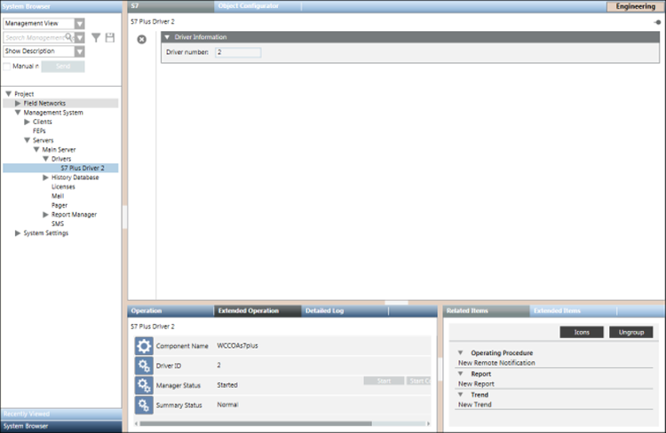
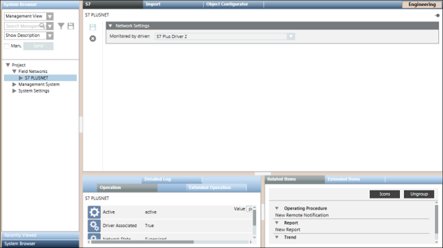
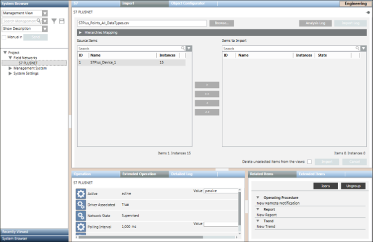
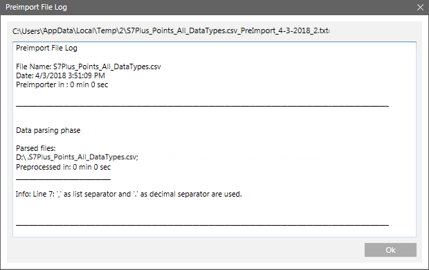
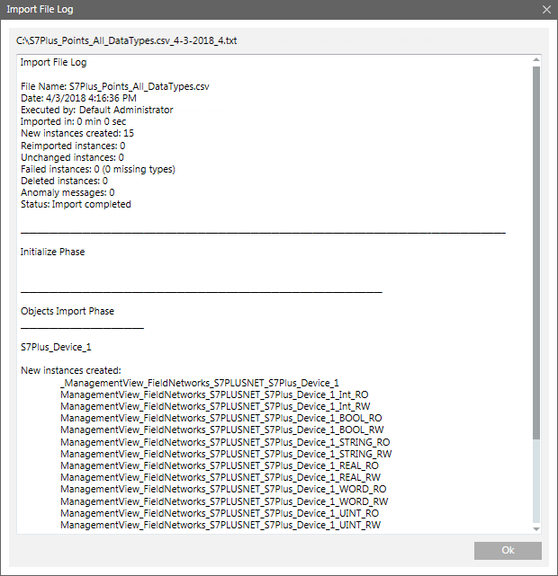
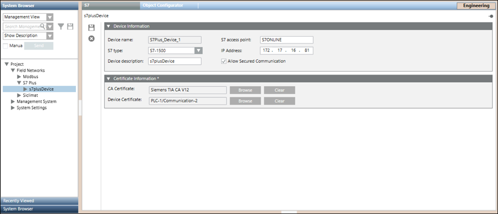

S7 PLUS Device Integration Workspace
The Device Integration Workspace provides information on the UI components for creating drivers, networks, device connections, and so on.
S7 PLUS Driver Workspace
The S7 PLUS driver workspace allows you to configure using the Driver Number field in the Driver Information expander. It displays the ID of the selected S7 PLUS driver.

S7 PLUS Toolbar | ||
Icon | Name | Description |
| Delete object | Deletes the S7 PLUS driver. You can delete a driver as long as it is not associated with an existing network. To delete the driver that is associated with a network, you must disassociate the driver from the network by selecting the empty space in the Monitored by driver drop-down list and clicking Save. If the selected driver is associated with a network, a message informs you that the driver cannot be deleted as it is monitoring a network. In this case, to delete the driver, you must first remove the network to which this driver is associated. |

S7 PLUS Network Workspace
The S7 PLUS network workspace allows you to configure the network settings such as associating the S7 PLUS driver to the network, saving the association, and deleting the network. The properties associated with the selected network display in the Operation tab or Extended Operation tab. You can also change the value of the poll interval. By default, this value is set to 0 ms.

Network Settings Expander
The Network Settings expander allows you to define the S7PLUS driver monitoring for a S7 PLUS network.
Network Settings | |
Item | Description |
Monitored by driver | Allows you to select a S7 PLUS driver. |
S7 PLUS Device Importer Workspace
The S7 PLUS Importer allows you to manage the import of field data (engineering objects) described in the S7 PLUS csv file.
You can import the field data (engineering objects) described in S7 PLUS configuration files (csv file) from the S7 PLUS device importer workspace.

Import Fields | |
Item | Description |
Browse | Displays the Open dialog box and allows you to select a file to import. The path of the selected file appears in the field. |
Source Items | Displays a preview of all the objects available in the selected csv file. These objects are identified by the following:
|
Imported Items | Displays a preview of all the objects selected for import. These objects are identified by the following:
NOTE: |
Search | Allows you to apply a search filter to the content that displays in the Source Items or Imported Items list. |
Delete unselected items from views | Allows you to specify whether or not, during the import, all the items available in the views, but not present in the file to import, must be deleted. If you check this option, any items relevant to the objects are also deleted (text groups included). |
Import | Starts the import process. NOTE: |
Cancel | Aborts the import process. NOTE: |
Analysis Log | Displays the Preimport File Log dialog box with the errors encountered during pre-processing phase of the csv file. NOTE: |
Import Log | Displays the Import File Log dialog box with the details of the import process. NOTE: |
Preimport File Log
You can view the errors encountered during the pre-processing of the csv file from the Preimport File Log dialog box that displays by clicking the Analysis Log button available above the Items to Import field. This Analysis Log button is enabled only when the pre-processing is complete.

Import File Log
You can view the errors encountered during the import of the device connections and logical devices from the Import File Log dialog box that is displayed by clicking the Open Log button above the Items to Import field. This button is enabled only when the import is complete.

S7 PLUS Device Information Expander
The Device Information expander provides details of the imported S7 PLUS device.

Item | Description |
Device name | Name of the imported S7 PLUS device |
S7 type | Type of the S7 PLUS device. The device can have any of the following values: |
Device description | Description of the S7 PLUS device |
S7 access point | Name of the access point of the S7 PLUS device. |
IP Address | IP address of the S7 PLUS device |
Allow Secured Communication | Allows you to secure communication between the S7 PLUS device and Desigo CC using certificates. If selected, the Certificate Information expander displays with the CA Certificate and Device Certificate fields. |
CA Certificate | Commercial certificates signed and issued by a trusted Certificate Authority (CA). You need to select the CA certificate that is present on your S7 PLUS device. This is a non mandatory field. |
Device Certificate | This is a mandatory field. It is the certificate present on the S7 PLUS device. It may or may not be a self signed certificate. You need to select the certificate that is present on your S7 PLUS device. |
Monitor S7 PLUS Objects in the System
The management station monitors the number of S7 PLUS objects in the system to ensure that the total count of these objects does not exceed the defined limits for the total number of system objects. The monitoring is done using properties such as System Objects Limit, System Load, System Objects, and Notification Threshold. These properties display in the Extended Operations tab when you select the Main Server Object from the Management View. Depending on the situation, the management station will perform any of the following:
- Issue warnings when you are approaching the maximum permitted limit.
- Generate an alarm if the System objects exceed the maximum permitted limit.
- Prevent importing S7 PLUS objects if the import activity can cause the system objects to exceed the maximum permitted limit.
The maximum permitted limit is defined by the System Objects Limit property.
The following scenarios provide a better understanding of the monitoring activity:
If the number of S7 PLUS objects is below both the system limits (defined by the System Objects Limit property) and the safety threshold (defined by the Notification Threshold property), then the System Load property indicates Normal and displays in the Extended Operation tab only.
NOTE: If you want to import S7 PLUS device connections or logical devices, the system will permit an import only if the System Objects Limit property and Notification Threshold property do not exceed their defined limits.

- If the number of S7 PLUS objects is between the system limits (defined by the System Objects Limit property) and the safety threshold (defined by the Notification Threshold property), then the System Load property indicates Warning and displays in the Extended Operation tab.
NOTE: In case of an import operation that exceeds the safety threshold, a warning message informs you how close you are to the limit (for example, 90%) and you can then decide whether or not to proceed with the import. - If the number of S7 PLUS objects exceeds the system limits (defined by the System Objects Limit property), then the System Load property indicates Alarm and displays in the Extended Operation tab.
NOTE: If an import operation exceeds the system limits, an error message displays to inform you that the import will not start.